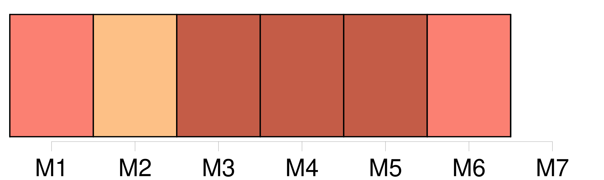
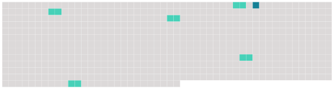

Longueur nb maillons : 6 mentions |
 |
Jusqu'à douze ans, je ne me vois aucune amourette, sauf pour une petite fille, nommée Carmen, à qui je fis tenir, par un gamin plus jeune que moi, [une lettre] dans [laquelle] je lui exprimais mon amour. [1 phrases] [Ma lettre] lui avait été remise le matin avant qu'elle se rendît en classe. [2 phrases] À [ma lettre] , j'en joignis donc une de la part de mon frère, qui ne savait pas écrire, pour Mlle Fauvette. [11 phrases] Ce qui troubla fort mes notions de morale, fut qu'il considérait comme aussi grave d'avoir compromis la jeune fille ( dont les parents lui avaient communiqué [ma déclaration] ), que d'avoir dérobé une feuille de papier à lettres. [7 phrases] Peut-être avait -elle déjà su que j'avais chargé un enfant des petites classes de porter [une lettre] à une « fille », comme disent les écoliers dans leur dur langage. |
 |
Il est possible de télécharger la ressource sur la page Ortolang |
Si vous avez des questions ou vous voyez des erreurs, merci d'envoyer un mail à silvia.federzoni89@gmail.com |